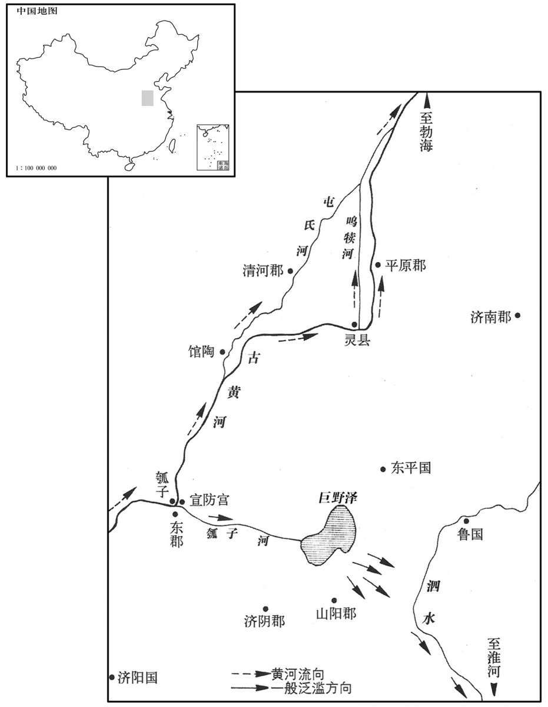

公元前39年资治通鉴：本年记事、原文与白话对照
按原书编年位置阅读；追叙和史论不等于本年发生的事件。白话采用所据译本，缺译不以生成译文补齐。
卷29 · 本年记事
公元前39年 · 汉孝元皇帝永光五年
五年〔（壬午、前三九）〕
本年事件索引（现代整理）

本年形势与背景参考图
春，正月，上行幸甘泉，郊泰畤。〔畤，音止。〕三月，幸河东，祠后土。
春季，正月，元帝前往甘泉，在泰祭祀天神。三月，再往河东，祭祀后土神。
秋，颍川水流杀人民。
秋季，颍川郡水灾，淹死百姓。
冬，上幸长杨射熊馆，〔师古曰：长杨，宫名也，在盩厔县；其中有射熊馆。〕大猎。
冬季，元帝前往长杨宫射熊馆，大肆游猎。
十二月，乙酉，毁太上皇、孝惠皇帝寝庙园，用韦玄成等之议也。〔玄成等奏曰：「祖宗之庙，世世不毁；继祖以下，五庙而迭毁。今高皇帝为太祖，孝文皇帝为太宗，孝景皇帝为昭，孝武皇帝为穆，孝昭皇帝与孝宣皇帝俱为昭。皇考庙，亲未尽。太上皇、孝惠庙皆亲尽，宜毁。」〕
十二月乙酉（十六日），元帝采用丞相韦玄成等的建议，下诏拆毁太上皇、孝惠皇帝的祭庙。
上好儒术、文辞，颇改宣帝之政；言事者多进见，〔好，呼到翻。见，贤遍翻。〕人人以〔【章：乙十一行本「以」上有「自」字；孔本同。】〕为得上意。又傅昭仪及子济阳王康爱幸，〔外戚传曰：元帝加昭仪之号，位视丞相，爵比诸侯王。师古曰：昭显其仪，示隆重也。济，子礼翻。〕逾于皇后、太子。〔昭仪位次皇后，今宠逾之。〕太子少傅匡衡上疏曰：〔疏，所据翻，条陈也。〕「臣闻治乱安危之机，在乎审所用心。盖受命之王，〔【章：乙十一行本「王」作「主」，傅校同。】〕务在创业垂统，传之无穷；继体之君，必存于承宣先王之德而褒大其功。昔者成王之嗣位，思述文、武之道以养其心，休烈盛美〔【章：乙十一行本「美」下有「皆」字；孔本同；张校同。】〕归之二后，而不敢专其名，〔师古曰：休，亦美也。烈，业也。后，君也。二君，文王、武王也。〕是以上天歆享，鬼神佑焉。陛下圣德天覆，子爱海内，〔覆，敷又翻。〕然而阴阳未和、奸邪未禁者，殆议者未丕扬先帝之盛功，〔师古曰：丕，大也。〕争言制度不可用也，务变更之，所更或不可行而复复之，〔更，工衡翻；下同。上复，扶又翻，又也。下复，扶目翻，反也。〕是以群下更相是非，吏民无所信。臣窃恨国家释乐成之业而虚为此纷纷也！〔师古曰：释，废也。乐成，谓已成之业，人情所乐也。乐，音洛。〕愿陛下详览统业之事，留神于遵制扬功，〔遵先帝之法制，扬先帝之功烈也。〕以定群下之心。诗大雅曰：『无念尔祖，聿修厥德，』〔师古曰：大雅文王之诗也。无念，念也。聿，述也。〕盖至德之本也。传曰：『审好恶，理情性，而王道毕矣。』〔衡守诗学，此必诗传之言。传，直恋翻。好，呼到翻。恶，乌路翻。〕治性之道，必审己之所有余而强其所有不足，〔治，直之翻。师古曰：强，勉也，音其两翻。〕盖聪明疏通者戒于太察，寡闻少见者戒于雍蔽，〔少，诗沼翻。〕勇猛刚强者戒于太暴，仁爱温良者戒于无断，〔断，丁乱翻。〕湛静安舒者戒于后时，广心浩大者戒于遗忘。〔师古曰：湛，读曰沈。忘，巫放翻。〕必审己之所当戒而齐之以义，然后中和之化应，而巧伪之徒不敢比周而望进。〔此，毗至翻。〕唯陛下戒之，所以崇圣德也！
元帝喜好儒家的学说，又 喜爱文章辞语。对宣帝的法令制度多有改变。谈论政事，提出建议的人，多数都被召见，每人都认为受到皇帝的注意。这时候，傅昭仪和她的儿子济阳王刘康，正受到元帝特别的宠爱，超过皇后和皇太子刘骜。太子少傅匡衡上书说：“我曾经听说，治乱安危的关键，在于人主是不是慎重用心。接受天的旨意的君王，任务在于开创大业，使它世代相承，无穷无尽地传下去。而继任的君王，心思要放到继承和发扬祖先的恩德功勋上。从前，周成王继承王位之后，追思祖父周文王、父亲周武王成功的道理，用以培养自己的心性，把美好的声誉和荣耀，都归功于祖父和父亲两位先王，而不敢自己居功。因此，上天享受他的供品，连鬼神也都保佑他。陛下圣明的恩德，象天一样覆盖大地，象爱护儿女一样爱护四海之内的百姓。可是阴阳没有调和，奸诈邪恶也没有禁止。这大概是因为臣子未能发扬光大先帝的盛大功业，反而争先恐后地抨击过去的法令规章不可用，一定要加以改变。然而，很多制度改变了之后，无法执行，只好再恢复原状。结果是，在下位的人发生纠纷，官吏和平民无所遵信。我常在内心痛恨，国家放弃了人心所乐的已成的功业，而白白去做那些纷乱的事情。但愿陛下仔细回顾汉室世代相继的事业，留意遵守先帝的法制，弘扬先帝的功业，用以安定臣僚的心。《诗经·大雅》说：‘不要忘记祖先的教诲，努力修养自己的德行。’这是达到‘德’的根本方法。《诗传》说‘知道应喜爱什么，应厌恶什么，使性情变好，圣王的道路就是如此。’修养性情的方法，必定要知道自己的长处，而弥补自己的缺欠。聪明通达的人，警惕苛察；见识不广的人，警惕被蒙蔽；勇猛刚强的人，警惕过于暴烈；仁爱温良的人，警惕没有决断；恬淡安静的人，警惕贻误时机；胸襟广阔的人，警惕疏忽大意。必须了解自己所应当注意纠正的缺失，以大义来弥补它，然后才能达到万事和谐的美好境界。那些伪善的乖巧之徒，才无法结党搭帮，企望挤进朝廷。务请陛下警惕自己，使陛下的圣德更为崇高。
臣又闻室家之道修，则天下之理得，故诗始国风，礼本冠、婚。始乎国风，原情性以明人伦也；本乎冠、婚，正基兆以防未然也；〔师古曰：关雎美后妃之德，而为国风之首。礼记冠仪曰：冠者，礼之始也。婚义曰：婚者，礼之本也。冠，古玩翻；下同。〕故圣王必慎妃后之际，别适长之位，〔师古曰：适，读曰嫡；下同。长，知两翻。〕礼之于内也。卑不踰尊，新不先故，〔先，悉荐翻。〕所以统人情而理阴气也；其尊适而卑庶也，适子冠乎阼，礼之用醴，〔师古曰：阼，主阶也。醴，甘酒也，贵于众酒。适，读曰嫡。〕众子不得与列，所以贵正体而明嫌疑也。非虚加其礼文而已，乃中心与之殊异，故礼探其情而见之外也。〔探，吐南翻。〕圣人动静游燕所亲，物得其序，〔师古曰：言凡物大小，高卑皆有次序。〕则海内自修，百姓从化。如当亲者疏，〔疏，读曰捤。〕当尊者卑，〔师古曰：如，若也。〕则佞巧之奸因时而动，以乱国家。故圣人慎防其端，禁于未然，不以私恩害公义。传曰：『正家而天下定矣！』」〔师古曰：易家人卦之彖辞。〕
“我又曾经听说，家庭如果安详和睦，天下自然治理得好。所以《诗经》开头就是《国风》。《礼记》开头就讲冠礼、婚礼。用《国风》开头，追溯性情的根本，表明人伦之间的关系。用冠礼、婚礼开头，，为安详的家庭奠立基础，以防患于乱起之前。所以圣明的君王，必须慎重处理妃嫔与皇后之间的关系，注意区分‘嫡子’与‘庶子’的不同地位，把礼仪纳入自己家内。卑贱的不能超过尊贵的，新来的不能排在旧有的之前。必如此，才合乎人情，理顺乎阴气。嫡子尊贵，庶子卑贱，嫡子成年，举行加冠礼时，在高台上隆重举行，使用甜酒祝贺。其他的儿子，不能用这种仪式，其目的就在于显示嫡子的尊贵，使立于无可怀疑的地位，不仅仅是表面的礼节仪式而已，而是内心对待嫡子与其他儿子截然不同，所以用礼仪。把真情显露于外。圣人的一举一动，和谁欢宴娱乐，和谁亲近，都要使尊贵卑贱都有一定次序。如此的话，全国百姓都会自我修养，顺从归化。如果应当亲近的反而疏远，应当尊重的反而放到卑贱的地位，那么乖巧的邪恶之徒就会乘机而动，使国家混乱。所以圣人谨慎小心，不愿有一个坏的开头。用心防范于乱起之前，决不因私人的恩情，伤害正大的原则。正如《易传》所说：‘家庭端正，则天下就安定了。’”
初，武帝既塞宣房，〔事见二十一卷武帝元封二年。塞，悉则翻；下同。〕后河复北决于馆陶，分为屯氏河，〔馆陶县，属魏郡，河水自此别出为屯氏河，东北至勃海章武县入海；过魏郡、清河、信都、勃海四郡，行千五百里。师古曰：屯，音大门翻。而隋氏分析州县，误以为毛氏河，乃置毛州，失之甚矣。复，扶又翻。〕东北入海，广深与大河等，故因其自然，不堤塞也。是岁，河决于清河灵鸣犊口，而屯氏河绝。〔据沟洫志：灵鸣犊口在清河东界。师古曰：清河之灵县鸣犊河口也。按唐博州高唐县，汉灵县地，鸣犊河在县西。宋白曰：魏州夏津县本汉灵县地，汉初为鄃县，故城在今德州西南五十里；天宝元年改为夏津县。〕
当初，武帝曾经堵塞黄河决口，筑宣房宫。后来，黄河又在北面的馆陶决口，形成屯氏河，沿东北方向入海，因为河床广度深度跟黄河相同，所以听其自由发展，不再堵塞决口。本年，黄河在清河郡所属灵县鸣犊堤再度决口，屯氏河于是无水干涸。
春，正月，戊辰，陨石于梁。〔据五行志，陨石于梁国。〕
上传译本此段记年与胡注本当前位置不同，按原文定位保留对照，年份待校对。译本记年：公元前38年。
春季，正月戊辰（二十九日），陨石坠在梁国。
三月，上行幸雍，祠五畤。〔雍，于用翻。畤，音止。〕
本段缺少可靠对应白话，原文完整保留；未使用生成译文。
冬，河间王元坐贼杀不辜废，迁房陵。〔元，河间献王德之来孙也。〕
上传译本此段记年与胡注本当前位置不同，按原文定位保留对照，年份待校对。译本记年：公元前38年。
冬季，河间王刘元，被控残杀无罪之人，撤销爵位，贬逐房陵。
罢孝文太后寝祠园。〔孝文太后，薄氏，葬霸陵之南。〕
上传译本此段记年与胡注本当前位置不同，按原文定位保留对照，年份待校对。译本记年：公元前38年。
元帝下令撤除文帝母亲薄太后的陵园。
上幸虎圈兽，〔圈，求阮翻；下同。〕后宫皆坐；熊逸出圈，攀槛欲上殿，〔上，时掌翻。〕左右、贵人、傅倢呓等皆惊走；〔傅倢呓，即傅昭仪，盖后进号也。倢呓，音接予。〕冯倢呓直前，当熊而立。左右格杀熊。上问：「人情惊惧，何故前当熊﹖」倢呓对曰：「猛兽得人而止；妾恐熊至御坐，〔坐，徂卧翻。〕故以身当之。」帝嗟叹，倍敬重焉。傅倢呓惭，由是与冯倢呓有隙。〔为后傅太后诬杀中山冯太后张本。〕冯倢呓，左将军奉世之女也。
上传译本此段记年与胡注本当前位置不同，按原文定位保留对照，年份待校对。译本记年：公元前38年。
元帝前往虎圈，观赏野兽搏斗，妃嫔们都在座奉陪。一只熊突然跳出圈外，攀着阑杆想上殿堂。元帝左右的侍从、贵族，包括傅婕妤在内的妃嫔们，都惊慌逃命。只有冯婕妤，一直向前站着挡住熊。武士把熊杀死。元帝惊魂初定后，问她：“人人恐惧，你为什么上前阻挡熊？”冯婕妤说：“猛兽凶性发作，只要抓着一个人，就会停止攻击，我恐怕它直扑陛下的座位，所以以身阻挡它。”元帝感激嗟叹，对冯婕妤倍加敬重。而傅婕妤大为惭愧，从此与冯婕妤产生隔阂。冯婕妤是左将军冯奉世的女儿。